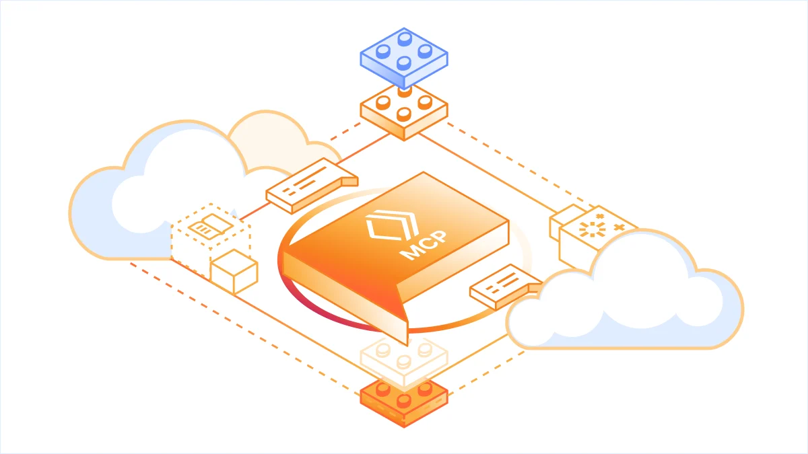
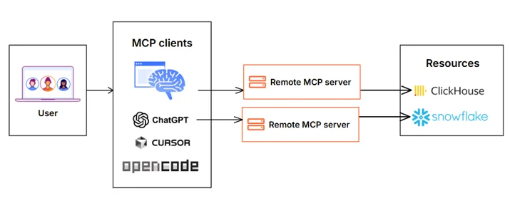
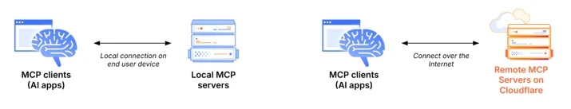
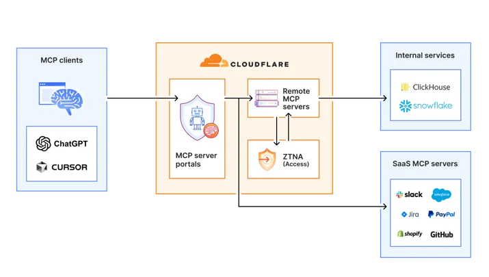
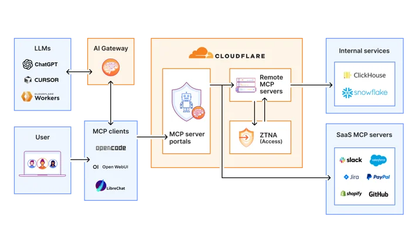

总结
Cloudflare 的核心判断：本地 MCP server 是企业安全的负债，远程 MCP + 集中治理才是可规模化的答案。
- 本地 MCP 依赖未审计的软件来源和版本，IT 无法统一管理。
- 远程 MCP 把凭证和 API 边界收在服务端，客户端只连 URL。
- Cloudflare Access 负责 OAuth、SSO、MFA、设备和上下文校验。
- MCP server portal 统一发现、权限、日志、DLP 和工具暴露。
- Code Mode 把“每个 API 一个工具”折叠成 search + execute，52 个工具从 9,400 token 降到约 600 token。
- AI Gateway 控制模型路由和成本；Cloudflare Gateway 检测 Shadow MCP。
原文逐段对照翻译
翻译说明：以下按原文顺序逐段翻译，保留架构、数字和建议；中文以自然、准确为目标。

为什么本地 MCP 是负债
We at Cloudflare have aggressively adopted Model Context Protocol (MCP) as a core part of our AI strategy. This shift has moved well beyond our engineering organization, with employees across product, sales, marketing, and finance teams now using agentic workflows. But adoption is not without security risks: authorization sprawl, prompt injection, and supply chain risks.
Cloudflare 已经把 MCP 作为 AI 战略的核心部分，采用范围远超工程团队：产品、销售、市场、财务都在用 agentic workflow。但采用 MCP 也带来安全风险：授权蔓延、prompt injection、供应链风险。
Very early on, we realized that locally-hosted MCP servers were a security liability. Local MCP deployments may rely on unvetted software sources and versions, which increases the risk of supply chain attacks or tool injection attacks. They prevent IT and security administrators from administrating these servers, leaving it up to individual employees.
很早我们就发现，本地托管的 MCP server 是安全负债：可能依赖未审计的软件来源和版本，增加供应链攻击和工具注入风险；IT/安全团队无法统一管理，只能让每个员工自己负责。
Instead, we have a centralized team that manages MCP server deployment across the enterprise. This team built a shared MCP platform inside our monorepo that provides governed infrastructure out of the box. When an employee wants to expose an internal resource via MCP, they get approval, copy a template, write tool definitions, and deploy.
于是我们建立了一个中央团队，统一管理企业内的 MCP server 部署。他们在 monorepo 里做了共享 MCP 平台，默认提供受治理的基础设施。员工要暴露内部资源时，先审批，再复制模板、写工具定义、部署。
The governance is baked into the platform itself, which is what allowed adoption to spread so quickly. CI/CD deploys them as remote MCP servers on custom domains, giving visibility into which MCP servers are used while maintaining control over software sources.
治理被做进平台本身，这才让采用速度这么快。CI/CD 把它们部署到自定义域名上的远程 MCP server，既能看见哪些 server 被使用，又能控制软件来源。


Cloudflare Access 负责认证
Many of our MCP servers sit in front of private corporate resources and require user authentication. Our monorepo template integrates Cloudflare Access as the OAuth provider. Cloudflare Access secures login flows and issues access tokens, while acting as an identity aggregator that verifies SSO, MFA, IP address, location, or device certificates.
很多 MCP server 位于私有企业资源前，需要用户认证。我们的模板把 Cloudflare Access 集成为 OAuth provider：它保护登录流程、签发 access token，并聚合身份，验证 SSO、MFA、IP、位置、设备证书等。
MCP server portal：统一发现与治理
As the number of remote MCP servers grew, we hit a new wall: discovery. We wanted every employee to find and work with all the MCP servers available to them. The portal lets an employee connect their MCP client and immediately see every internal and third-party MCP server they are authorized to use.
远程 MCP server 多了以后，新问题是“发现”：怎么让每个员工找到自己有权使用的 server。Portal 让员工连接 MCP client 后，立刻看到所有已授权的内部和第三方 MCP server。
Beyond discovery, portals provide centralized logging, consistent policy enforcement, and DLP guardrails. Administrators can see who logged into what portal and create DLP rules that prevent PII from being shared with certain MCP servers. They can also control who has access to the portal and which tools are exposed.
除了发现，portal 还提供集中日志、一致的政策执行和 DLP 护栏。管理员能看到谁登录了哪个 portal，创建规则阻止 PII 流向某些 server；还能控制谁能访问 portal、每个 server 暴露哪些工具。
For example, one portal could be accessible only to finance employees and expose just the read-only tools for the internal code repository. Another portal, accessible only to engineering employees on corporate laptops, could expose read/write tools to the same repository.
比如财务组只能访问一个 portal，里面只暴露代码库的只读工具；工程组在公司笔记本上访问另一个 portal，可以拿到同一个代码库的读写工具。

Code Mode：把工具定义成本压到固定
The standard approach to MCP requires defining a separate tool for every API operation. But this static and exhaustive approach quickly exhausts an agent's context window, especially for large platforms with thousands of endpoints. We previously used server-side Code Mode to expose thousands of Cloudflare API endpoints while reducing token use by 99.9%.
标准 MCP 做法是“每个 API 操作定义一个工具”，但这种静态、穷举的方式很快耗尽上下文，尤其是几千个 endpoint 的大平台。我们之前用 server-side Code Mode 暴露 Cloudflare 的几千个 endpoint，同时把 token 降低 99.9%。
Now you can front all of your MCP servers with a centralized portal that performs audit controls and progressive tool disclosure. Instead of exposing every tool definition to a client, all underlying MCP servers collapse into just two tools: portal_codemode_search and portal_codemode_execute.
现在可以用一个集中 portal 包住所有 MCP server，做审计控制和渐进式工具披露。所有底层 server 折叠成两个工具：`portal_codemode_search` 和 `portal_codemode_execute`。
The search tool gives the model access to a codemode.tools() function that returns all tool definitions from every connected upstream MCP server. The model writes JavaScript to filter and explore these definitions, finding exactly the tools it needs without every schema being loaded into context.
search 工具给模型一个 `codemode.tools()`，返回所有上游 server 的工具定义。模型写 JavaScript 过滤、探索这些定义，只把需要的工具找出来，不必把所有 schema 都加载进上下文。
The execute tool provides a codemode proxy object where each upstream tool is available as a callable function. The model writes JavaScript that calls these tools directly, chaining multiple operations, filtering results, and handling errors in code. All of this runs in a sandboxed environment powered by Dynamic Workers.
execute 工具提供 `codemode` proxy，每个上游工具都是可调用函数。模型写 JavaScript 直接调用、串联多个操作、过滤结果、在代码里处理错误。全部运行在 Dynamic Workers 驱动的沙箱里。
When our internal portal is connected to just four MCP servers, it exposes 52 tools that consume approximately 9,400 tokens of context just for their definitions. With Code Mode enabled, those 52 tools collapse into 2 portal tools consuming roughly 600 tokens, a 94% reduction. As we connect more MCP servers, the token cost of Code Mode doesn't grow.
内部 portal 连接 4 个 MCP server 时，暴露 52 个工具，仅定义就占约 9,400 token。开启 Code Mode 后，52 个工具折叠成 2 个 portal 工具，约 600 token，减少 94%。而且接入更多 server 时，这个成本不增长。
AI Gateway 与 Shadow MCP

We plug AI Gateway into the architecture by positioning it between the MCP client and the LLM. This allows us to switch between LLM providers to prevent vendor lock-in and enforce cost controls by limiting the number of tokens each employee can burn through.
AI Gateway 放在 MCP client 和 LLM 之间：可以快速切换模型提供商，避免 vendor lock-in；也能限制每个员工的 token 消耗，做成本控制。
Cloudflare Gateway discovers and blocks shadow MCP: remote MCP servers that are not being accessed via an MCP server portal. We scan HTTP hostnames, MCP-specific URL paths like /mcp and /mcp/sse, and DLP body inspection for JSON-RPC methods such as tools/call, initialize, and resources/read.
Cloudflare Gateway 负责发现和阻断 Shadow MCP：绕过 portal、直接访问的远程 MCP server。它扫描 HTTP 主机名、`/mcp`、`/mcp/sse` 等路径，并用 DLP 检查 body 里的 JSON-RPC 方法，如 `tools/call`、`initialize`、`resources/read`。
Public-facing MCP servers are protected with AI Security for Apps. Every remote MCP server is an HTTP endpoint, so it can sit behind Cloudflare WAF. Customers can inspect inbound MCP traffic for prompt injection attempts, sensitive data leakage, and topic classification.
对客户公开的 MCP server 用 AI Security for Apps 保护。每个远程 MCP 都是 HTTP endpoint，可以放在 Cloudflare WAF 后面，检查入站流量里的 prompt injection、敏感数据泄漏和主题分类。
最终建议
We recommend starting by putting your existing remote and third-party MCP servers behind Cloudflare MCP server portals and enabling Code Mode to start benefiting from cheaper, safer and simpler enterprise deployments of MCP.
建议先从“把现有远程和第三方 MCP server 放到 portal 后面、开启 Code Mode”开始，先拿到更便宜、更安全、更简单的企业级 MCP 部署收益。
学习者视角
关键收获
- MCP 不只是工具协议，还是企业集成层。 一旦跨团队使用，身份、权限、审计、成本都变成一等公民。
- 本地 MCP 的隐性成本很高。 安装、版本、密钥、供应链，每一项都可能失控。
- Portal 是治理抓手。 发现、权限、日志、DLP、工具暴露都集中到一个入口。
- Code Mode 是上下文工程。 不是让模型记住所有工具，而是按需搜索、按需执行。
- Shadow MCP 是新的影子 IT。 企业需要网络层检测。
放回课程里看
这篇是 Week 2 MCP 的企业落地版。它和 I Still Prefer MCP Over Skills 对照：一个讲为什么 MCP 是连接层，一个讲企业怎么把连接层管起来。
一个反直觉点
很多人以为 MCP 的敌人是“工具不够多”。Cloudflare 的结论相反：工具定义太多才是成本和安全问题的来源。 Code Mode 用两个工具替代几百个，反而更强。
拓展
思考题
- 如果公司要接 20 个内部系统，你会选择“每个系统一个 MCP server”，还是“一个 portal + Code Mode”？
- MCP portal 的集中化会不会变成单点故障？如何设计降级？
- Shadow MCP 检测应该放在网络层、终端层，还是 MCP client 层？
- Code Mode 让模型写 JavaScript 调工具，安全边界应该怎么划？
练习
为一个假想公司设计 MCP 治理方案：
- 画出 client → portal → MCP server → 内部系统的链路；
- 标出认证、授权、审计、DLP、成本控制点；
- 选择 3 个必须走 portal 的场景；
- 设计一个 Shadow MCP 检测规则。